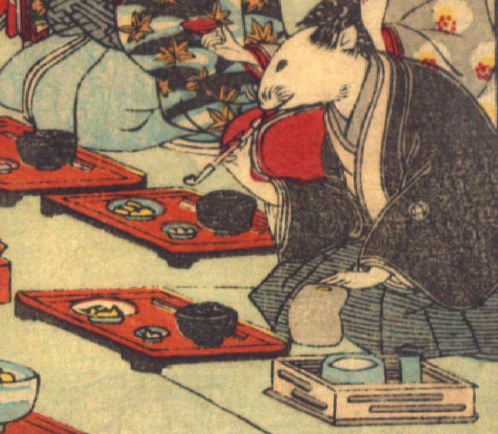

男の鼠。髪を結い、薄茶色の着物に青い袴を身に付け、黒い羽織をまとっている。座って、右手に煙管を持ち、吸い口を咥えている。膝元に赤い膳が、脇に煙草盆が置かれている。
著作者：David Thompson／出典：親書誌：U426_nichibunken_0112：Nedzumi no Yome-Iri／日付：2006／資源識別子：U426_nichibunken_0112_0010_0009
Copyright (c)2010- International Research Center for Japanese Studies, Kyoto, Japan. All rights reserved.